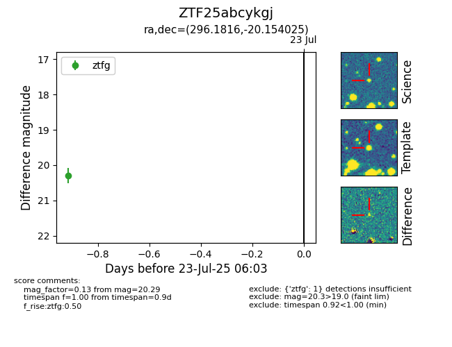

Target ZTF25abcykgj at 2025-07-23 12:37, see:
FINK: fink-portal.org/ZTF25abcykgj
Lasair: lasair-ztf.lsst.ac.uk/objects/ZTF25abcykgj
ALeRCE: alerce.online/object/ZTF25abcykgj
alt names
ZTF25abcykgj (ztf,fink)
coordinates:
equatorial (ra, dec) = (296.1816,-20.15403)
galactic (l, b) = (20.1045,-20.46444)
photometry
last ztfg=20.29
1 ztfg detections
